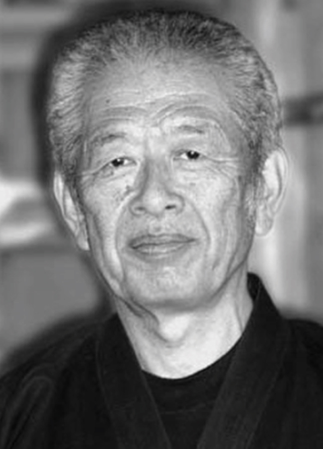

Gyokko Ryû Koshijutsu

"School of the Jewel Tiger"
Dr. Hatsumi is the 28th Soke

Overview:
Gyokko Ryû Koshijutsu is the oldest of the Bujinkan Schools. It is known for its Koshijutsu which emphasizes striking weak and vital areas of the body such as muscles and soft organs and for using fingers and thumbs for ripping and tearing. The oldest of the nine traditions, this school forms much of the fundamentals for the Bujinkan training including the Kihon Happo, Muto Dori, and Sanshin No Kata. Its movement favors indirect attacks which tend to be spherical and small techniques that often flank the opponent.
The ryû is a complete fighting method encompassing Koshijutsu which consists mainly of strikes and joint locks with some throws, along with other skills such as Shuriken Jutsu (throwing blades), Ken Jutsu (sword arts), and Kyoketsushoge (sickle and weighted rope). It has been said that Gyokko Ryû along with Koto Ryû make up 50% of Bujinkan training because of how well they complement each other using direct and indirect methods of attack. Cho Gyokko originally founded Gyokko Ryû when he fled China during the Tang Dynasty around 900 AD.
The Nine Rules of the Gyokko Ryû:
- The Character NIN means to guard the nation even with one's life.
- Forget self, be patient, fear not dying.
- In danger say or show nothing.
- As a strong enemy comes at you, keep indomitable.
- Serve and protect the master, as you must your parents.
- Vices dissipate your proficiency.
- Being drunk affects your judgement.
- Destroy the enemy's power but leave his life.
- To others teach not without the master's permission.
Lineage of Gyokko Ryû:
- Ikai
- Hogenbo Tesshun
- Sasabe, Tendo
- Hachiryu, Nyudo
- Tozawa, Hakuunsai
- Tozawa, Shozuke
- Suzuki, Saburo Shigeyoshi
- Suzuki, Gobei
- Suzuki, Kojiro Mitsu
- Tozawa, Nyudo Geneai
- Yamon, Hyoun
- Kato, Ryû Hakuun
- Sakagami, Goro Katsushige
- Sakagami, Taro Kunishige
- Sakagami, Kotaro Masahide
- Sougyoko, Kan Ritsushi
- Toda, Sakyo Ishinsai
- Momochi, Sandayu 1
- Momochi, Sandayu 2
- Momochi, Tanba Yasumitsu
- Momochi, Taro Saemon
- Toda, Seiryu Nobutsuna
- Toda, Fudo Nobuchika
- Toda, Kangoro Nobuyasu
- Toda, Eisaburo Nobumasa
- Toda, Shinbei Masachika
- Toda, Shingoro Masayoshi
- Toda, Daigoro Chikashige
- Toda, Daisaburo Chikashige
- Toda, Shinryuken Masamitsu
- Takamatsu, Toshitsugu
- Hatsumi, Masaaki